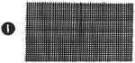
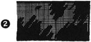
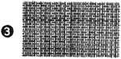
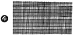
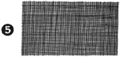
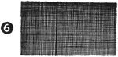
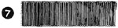

Select any picture to view an
enlargement in a new window
1952—How to Make Hats
by Ruby Carnahan
Description of Basic Material Used in Millinery
ELASTIC NET (ILLUS. 1)
- A coarse mesh material.
- Used for making frames cut from patterns, or can be steamed and blocked into a frame.
- Sold by the yard in black or white.
BUCKRAM (ILLUS. 2)
- A very stiff material also used for frame making, and for foundation for trimmings, such as buckles and various other fabric-covered ornaments.
- Sold by the yard in black or white.
WILLOW (ILLUS. 3)
- A material much like buckram, a little finer grade than buckram and used to better advantage for molding on blocks or on wire frames when copying a hat.
- Sold by the sheet in cream color.
HONEY COMB (ILLUS. 4)
- A cotton (coarse) mesh material, slightly sized, used for turban or crown foundations, or where some stiffness is required.
- Sold by the yard in black, white and some colors.
CRINOLINE (ILLUS. 5)
- A light weight fine mesh material, often used with honey comb when making turban foundations. Use a layer of honey comb and then a layer of crinoline.
- Sold by the yard in black and white.
SIZED CHIFFON (ILLUS. 6)
- A sheer stiff material also used like crinoline or horiey comb. This material also can be steamed and molded for turban foundations. Often used for hat linings.
- Sold by the yard in black, white and some colors.
HEADSIZE RIBBONS (ILLUS. 7)
- Saw-tooth grosgrain ribbon No. 5 is used for head bands. This ribbon will keep its shape when it has been swirled or blocked before sewing in hat headsize.
- Black, grey or brown are standard colors for winter hats, white or blue for summer hats. Recently, bright contrasting colored headbands in hats have been very popular, for both summer and winter hats.
PAPER COVERED WIRE
- Available in several weights. Heavy weight wire is used for wiring buckram frames. Light weight wire is used for wiring facings, etc. Sold in rolls in black and white.
SILK COVERED WIRE
- Available in several weights. Heavy weight wire is used for making wire frames and for wiring straw hat brims. Where wire will be visible, silk covered wire can be dyed to match the color of any material. Light weight silk wire is used for wiring lace bows, etc. Sold in some colors and black and white.
STEEL WIRE
- Used for sailor brims or any brim which is to be perfectly flat; steel wire will not bend.
RIBBON WIRE
- Used to wire ribbon for bows. Sold in black and white.
TIE WIRE
- Used for tying cross wires when making a wire frame. Also used for branching flowers and tying loops of ribbon bows together. Sold in green, white and black.
WIRE JOINERS
- Used to join ends of wire. A small hollow metal tube, about one-half inch long.
STRAW SIZING AND FELT SIZING
- Sizing is used as a stiffener for straw and felt hats. However there are two kinds of sizing, straw sizing is used for straw, and felt sizing is used for felts. Hats steamed and blocked of straw or of felt, must be thoroughly dry before sizing is applied. If more stiffness is desired, a second coat of sizing may be applied after first coat of sizing is dry.
- There is an all purpose sizing on the market which may be used for either straw or felt.
OTHER EQUIPMENT
- SANDPAPER FOR CLEANING FELTS
- HEAVY PAPER FOR PATTERNS
- TISSUE PAPER FOR PATTERNS
- SMALL PAINT BRUSH FOR APPLYING SIZING
- SOFT BRUSH
- WHISK BROOM
- WIRE JOINERS
- MILLINERY GLUE
- FELT SIZING
- STRAW SIZING
- BLACK AND WHITE PAPER-COVERED WIRE
- BLACK AND WHITE SILK-COVERED WIRE
- STEEL WIRE
- BLACK AND WHITE RIBBON WIRE
- TIE WIRE
- SMALL PADDED BOARD FOR PRESSING
- PRESSING PADS AND CLOTHS
- ASSORTED MILLINERY NEEDLES, NO. 3 - NO. 9
- TAPE MEASURE
- THIMBLE
- PENCIL
- TAILOR'S CHALK
- PINS
- RULER
- SCISSORS
- MILLINERY THREAD NO. 24 IN BLACK AND WHITE
- HEAVY DUTY THREAD NO. 40 IN COLORS
- CORD FOR TYING MATERIALS ON BLOCKS
- PUSH PINS FOR PINNING MATERIALS ON BLOCKS
- NIPPERS FOR CUTTING WIRE.
HAT LABELS
- Individual names on tapes to sew in the headband in crown of hats, may be purchased from any of the Millinery Supply Houses. They are made to order, and require several weeks for delivery. Sold by the hundred and cost is nominal.